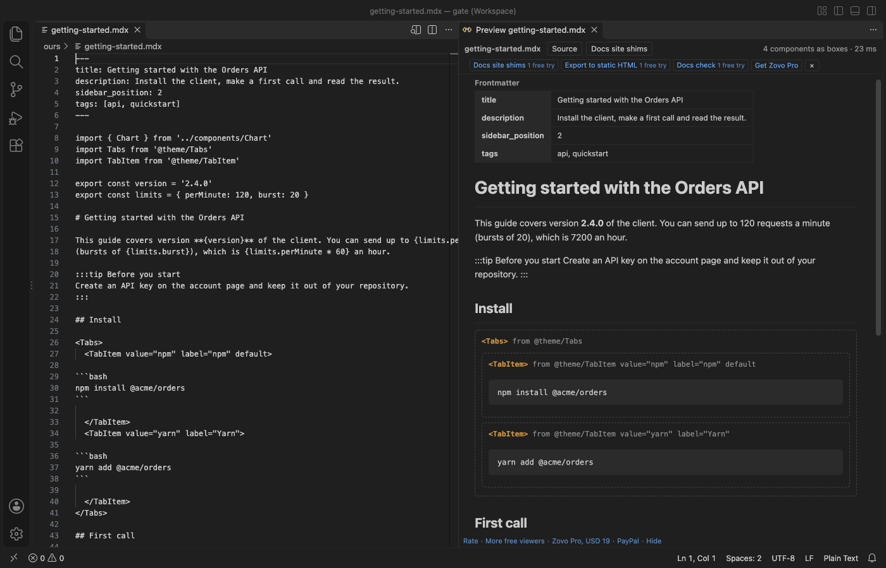

MDX Preview & Live MDX Viewer
MDX Preview & Live MDX Viewer, a VS Code extension by Zovo
See your .mdx page beside the text in VS Code, updated as you type. The MDX compiler is built in, so it works offline and needs no dev server. Made by Zovo.
Free, MIT license. Needs VS Code 1.75.0 or newer. Extension ID zovo.zovo-mdx-preview, version 0.1.0.

Free, with no account and no network calls:
- A live preview next to the editor for
.mdxfiles: Markdown, GFM tables, task lists, strikethrough and footnotes, code blocks colored by language, and the frontmatter as a table at the top. - Inline JSX is drawn as you type: HTML elements such as
<div>,<details>or<img>show as HTML, and simple expressions such as{2 * 3}, a value fromexport constor{frontMatter.title}show their result. - Components the preview cannot draw (your own React components, a docs site's components) show as a labeled box with their name, where they are imported from and their props. The text inside them is drawn as usual, so a Docusaurus, Nextra or Storybook page still reads well.
- Compile errors show at the top of the preview with the line and column. Click the line to jump there. The last good render stays below until the text is fixed.
- Scroll sync both ways: the preview follows the editor and the editor follows the preview. Double-click a block in the preview to put the cursor on its line.
- The preview takes its colors from your VS Code theme, dark or light.
- Pictures next to the .mdx file (and
/img/...from astatic/orpublic/folder) are shown. Links to other .mdx files open that file and its preview.
Open an .mdx file and click the preview button at the top right of the editor, or run MDX: Open MDX Preview to the Side from the Command Palette. Nothing opens by itself. The extension adds no language and no editor for .mdx, so it works next to the MDX language support you already use.
Zovo Pro: USD 19 once, for the Pro tools in every Zovo extension. Each Pro tool has 1 free try on your computer first:
- Docs site shims: Docusaurus admonitions (
:::note,:::tip,:::warning...),TabsandTabItem,CodeBlock, code block titles and heading ids{#id}, and NextraCalloutandSteps, drawn in the preview the way the docs site shows them. HTML comments are read like Docusaurus reads them. - Export to static HTML: one .mdx page, or every .mdx file of a folder with an index page, as HTML files with the styles and local pictures inside and links between the pages. No script in the output.
- Docs check: for the workspace, a folder or one file, it lists files that do not compile, broken relative links and #anchors, missing pictures, missing frontmatter fields (
titleby default), unused imports and headings that skip a level. The list goes to the Problems view and a Markdown report.
The Pro tools are in the Command Palette (MDX: ... (Pro)), in the editor title menu, in the right-click menu of an .mdx file or a folder, and in the small row at the top of the preview. The row closes with its x for the rest of the session, and the setting zovoMdx.showProTools hides it for good.
Made by Zovo.
Questions people ask
Is MDX Preview & Live MDX Viewer free?
Yes. MDX Preview & Live MDX Viewer is free and MIT licensed.
How do I install MDX Preview & Live MDX Viewer?
Click "Install in VS Code" above, or search for zovo.zovo-mdx-preview in the Extensions view.
Details
- The page is compiled with MDX 3 (
@mdx-js/mdx) with GFM and frontmatter support, in VS Code itself. The preview draws the result with React inside a webview that may not load anything from the web. - No code from your file runs. Imports are never loaded, and expressions are read without running them: literals, arrays, objects, arithmetic and names from
export constor the frontmatter. Anything else, such as a function call, shows as code in a small chip. - Pictures from the web are not loaded, because the preview makes no network requests. A note shows their address instead.
- Files larger than 1 MB show a message instead of a preview (setting
zovoMdx.maxFileKB). - The docs check does not check links to site routes such as
/docs/intro, because they depend on the site's configuration.
Settings
| Setting | Default | What it does |
|---|---|---|
zovoMdx.preview.updateDelayMs | 200 | Wait after typing before the preview updates, in milliseconds. |
zovoMdx.preview.scrollSync | true | Scroll the preview with the editor and the other way round. |
zovoMdx.maxFileKB | 1024 | Largest file the preview draws. |
zovoMdx.docsCheck.requiredFrontmatter | ["title"] | Frontmatter fields the docs check asks for. |
zovoMdx.export.outputFolder | mdx-html | Output folder of a folder export, inside that folder. |
zovoMdx.showProTools | true | Show the Zovo Pro tools in menus and the preview. |
zovoMdx.askForRating | true | Ask once for a rating after a few good previews. |
zovoMdx.showSupportLinks | true | The small Rate, More free tools and Zovo Pro links under the preview. |
Privacy
No telemetry, no account and no network requests. The only pages that open in your browser are the ones you click: a web link in your page, the review page, or a Zovo Pro page.
License
MIT. Third-party licenses are in THIRD-PARTY-NOTICES.md.
Install MDX Preview & Live MDX Viewer
Click the button to open VS Code and install it, or press Ctrl+P (Cmd+P on macOS) in VS Code and run ext install zovo.zovo-mdx-preview.
Free, MIT license. Needs VS Code 1.75.0 or newer. Extension ID zovo.zovo-mdx-preview, version 0.1.0.
Source code and issues are on GitHub.
Zovo Pro and support
Zovo Pro: USD 19 once, every Zovo viewer. It turns on the Pro tools in this extension and in the other Zovo extensions you use. The free features stay free.
After a card payment your license key shows on the next page. Paste it with the command "Zovo Pro: Enter a key".
You can also support the work with no Pro:
Need your format supported?
Open a format request with a sample file, and I reply there whether it can be done. For USD 299 once, through this GitHub Sponsors tier, I add your file format or a missing feature to this extension, with tests, within 7 days.